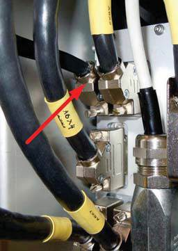
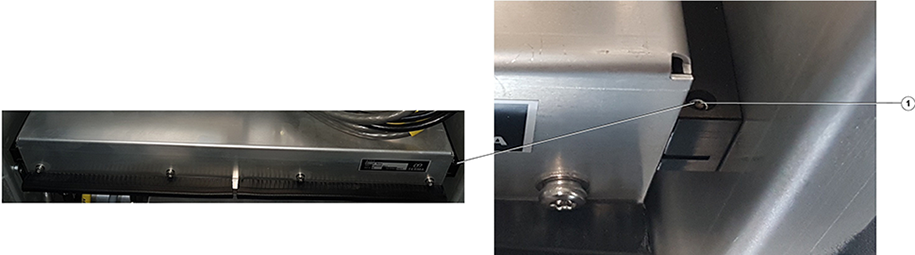

Removal of the Blower
Assy.
-
Stop antenna rotation (if active) with the Radar Service Application.
-
Switch “Mains Off” with the Radar Service
Application.
-
Turn off power to the transceiver with the power switch on
the Power Supply Unit
(PSU).
-
On the PSU,
remove the connection to the Blower
Assy - the location of the connector is shown in Figure 1. If
the screw is tightened too hard, use the Allen key, 2 mm.
Figure 1.
Connector

-
Remove the two grub screws on the left and on the right
side of the Blower Assy (see
Figure 2)
with the Allen key, 2
mm.
Figure 2. Grub
screws

-
Pull out the Blower
Assy together with its cable.